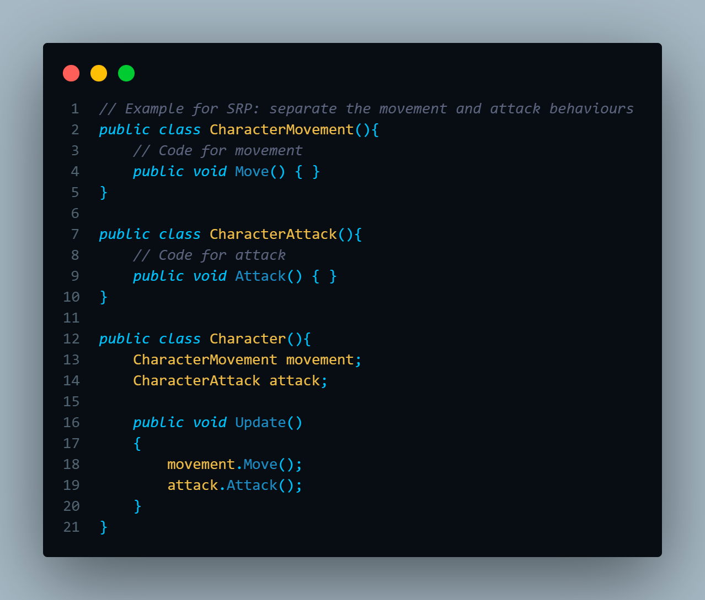
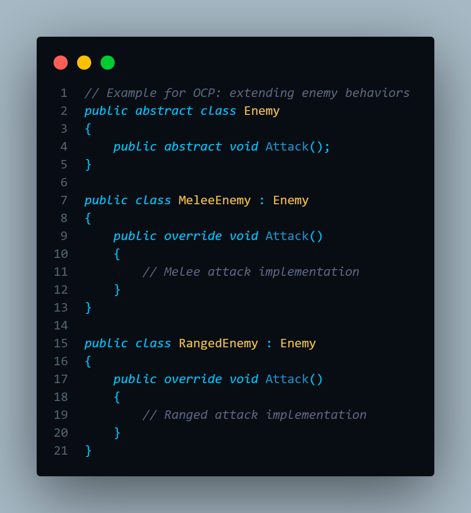
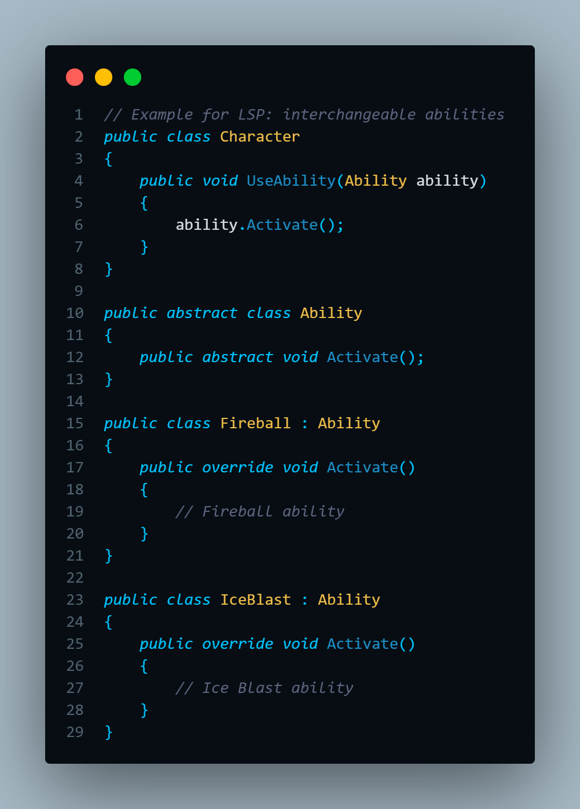
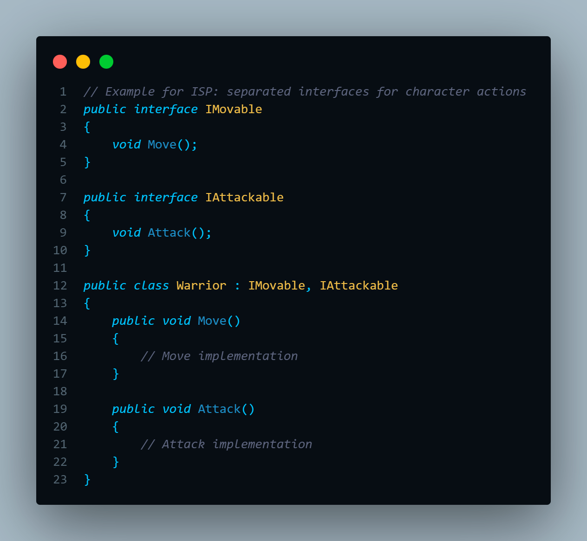
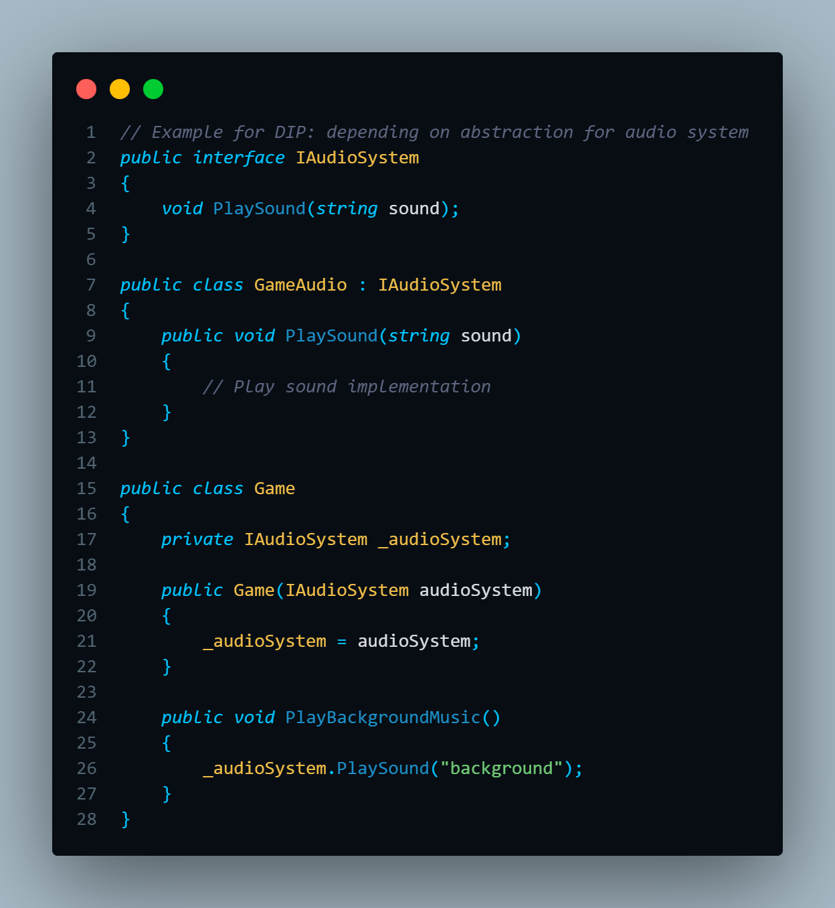

In video game development, the application of SOLID software design principles creates cleaner, more manageable code. These five object-oriented principles (Single Responsibility, Open-Closed, Liskov Substitution, Interface Segregation, and Dependency Inversion) allow developers to create flexible, modular systems that can easily adapt to changes during the game's lifecycle. The goal of these 5 principles when writing code are:
- Create efficient software: that delivers what it is intended to do and that is robust and stable.
- Write code that is clean and flexible to change: that can be easily modified as needed and that is reusable and maintainable.
- Allow scalability: that accepts to be extended with new functionalities in an agile way.
In short, develop quality software.
1. Single Responsibility Principle (SRP)
"A class should have one, and only one, reason to change"
Single Responsibility Principle (SRP) states that each class should have only one reason to change. In a game, this could mean separating character movement from attack behavior.
By isolating these responsibilities, you make the game’s code more flexible and reduce errors when new features are added. Imagine having your game character’s abilities split into separate components —jump, sprint, attack— each with its own code, enabling seamless adjustments without risking other gameplay features.
2. Open-Closed Principle (OCP)
"You should be able to extend a classes behaviour without modifying it"
The Open-Closed Principle (OCP) suggests that code should be open for extension but closed for modification. In game updates, you might add new enemy behaviors without altering existing code, reducing bugs and unexpected effects.
For example,by implementing a modular enemy AI, you can create different attack patterns for various enemies by adding new classes, keeping the base enemy class intact.
3. Liskov Substitution Principle (LSP)
"Derived classes must be substitutable for their base classes"
The Liskov Substitution Principle (LSP) states that subclasses should be substitutable for their base classes without altering program behavior.
This principleis critical in games for things like weapons or player abilities. If a player character can switch between different abilities (e.g., fireball vs. ice blast), each ability should work consistently within the character’s general actions without causing unexpected results.
4. Interface Segregation Principle (ISP)
"Make fine grained interfaces that are client specific"
The Interface Segregation Principle (ISP) focuses on keeping interfaces small and focused. In a game, this could mean creating separate interfaces for different character abilities (e.g., IMovable for movement, IAttackable for attacks), enabling developers to assign only the necessary behaviors to different character types, thus avoiding bloat and unnecessary dependencies. 
5. Dependency Inversion Principle (DIP)
"A class should have one, and only one, reason to change"
The Dependency Inversion Principle (DIP) aims to reduce tight coupling by depending on abstractions rather than concrete implementations.
For instance, if your game has an audio system, depending on an interface (IAudioSystem) rather than a concrete class allows you to swap the audio system with minimal effort, even in the late stages of development.
In conclusion, applying the SOLID principles in game development brings a powerful approach to designing modular, scalable, and maintainable code. By keeping the codebase clean and adaptable, developers can introduce new features, fix bugs, and make gameplay adjustments without risking other parts of the game. SOLID principles not only make development smoother but also improve the game's stability and quality over time, which is critical in delivering a memorable gaming experience.